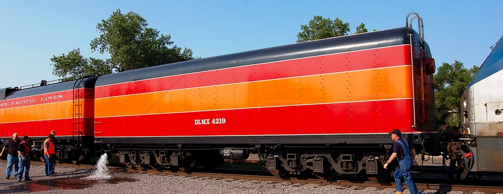

Last updated: 24 June, 2015
| Builder: | Baldwin |
| Build #: | 64310 |
| Date: | 1942 |
| Engine #: | 4219 |
| Railroad: | Southern Pacific |
| Website: | www.orhf.org |
| Email: | info@orhf.org |
| Location: | Oregon Rail Heritage Center, 2250 SE Water Ave. Portland, OR 97214 |
| GPS: | 45.505946, -122.660664 Parking under Hwy-99 at end of Grand St. |
| Phone: | 503-233-1156 |
| Status: | Operational |
| Notes: | Tender only. Used as an auxiliary tender behind the Daylight, Southern Pacific 4449 |
| Class: | AC-10 |
| Gauge: | 4'-8½" |
| F.M.Whyte: | 4-8-8-2 |
| Drivers: | |
| Gear Ratio: | |
| Tractive Effort: | |
| Weight: | |
| Weight on Drivers: | |
| Length: | |
| Boiler: | |
| Cylinders: | |
| Top Speed: | |
| Fuel: | |
| Fuel Type: | |
| Water: | |
| Steam psi: |